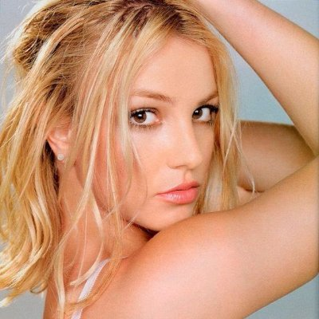
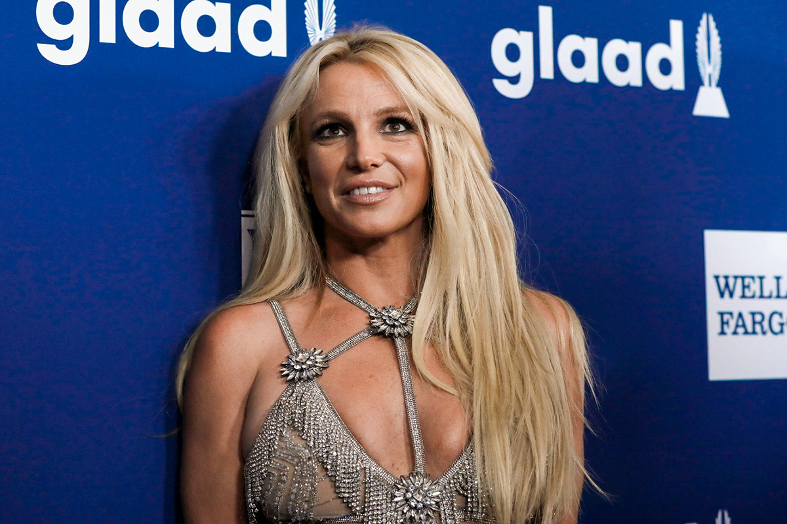
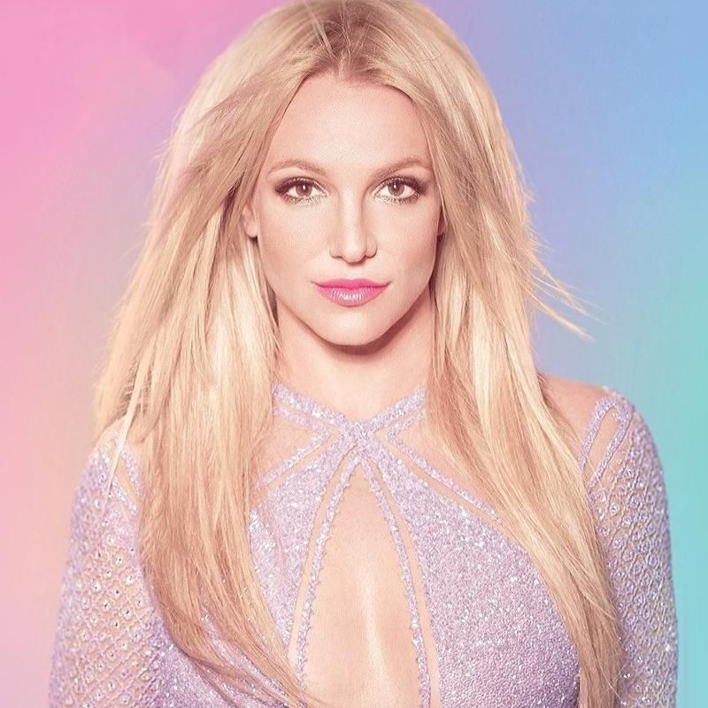

Britney Jean Spears (McComb, 2 de dezembro de 1981) é uma cantora, compositora, dançarina e atriz norte-americana. Nascida no Mississippi e criada em Kentwood, no estado de Louisiana, ela iniciou sua carreira artística atuando em papeis em produções teatrais e programas de televisão durante a infância, antes de assinar um contrato com a Jive Records em 1997. Seu primeiro e segundo álbuns de estúdio, ...Baby One More Time (1999) e Oops!... I Did It Again (2000), tornaram-se sucessos internacionais, com o primeiro tornando-se o álbum mais vendido por uma artista solo adolescente. As faixas-título "...Baby One More Time" e "Oops!... I Did It Again" quebraram recordes internacionais de vendas. Em 2001, Spears lança seu terceiro álbum de estúdio auto-intitulado, Britney, e desempenhou o papel principal no filme Crossroads (2002). Ela assumiu o controle criativo de seu quarto álbum de estúdio, In the Zone (2003), que rendeu o single de sucesso mundial "Toxic".
Britney tem dois filhos Sean Federline e Jayden James Federline, dois irmãos, sendo Jamie Lynn Spears e Bryan Spears. Já foi casada duas vezes, Kevin Federline (de 2004 a 2007), Jason Allen Alexander (de 2004 a 2004)
   voltar